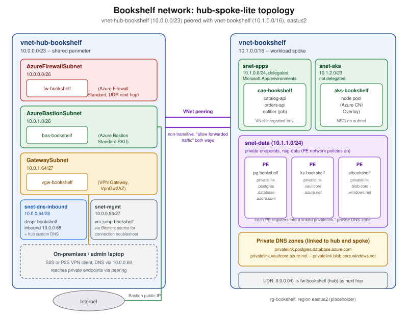

Virtual Networks
|
This content was generated with the assistance of AI and should be verified against the official documentation before being relied on in production. |
Commands on this page are current for Azure CLI 2.90.0 (checked 2026-09-27); re-verify against az version and
the linked reference pages before relying on them in a pipeline. Two behaviors covered below changed recently
enough that a build following an older tutorial can differ from what the CLI does today: NAT Gateway’s
zone-redundant StandardV2 SKU, and the retirement of implicit default outbound internet access for virtual
machines in newly created virtual networks (both re-verified below against current Microsoft Learn guidance).
Every other Bookshelf page assumes a network already exists underneath cae-bookshelf, aks-bookshelf,
pg-bookshelf, kv-bookshelf and stbookshelf — this page is where that network is actually built. It covers
Azure Virtual Network (VNet) fundamentals, the building blocks that keep traffic segmented and filtered
(subnets, NSGs, ASGs), how VNets talk to each other (peering) and to on-premises networks (briefly; see
VPN Gateway and Hybrid Connectivity), how PaaS services attach privately to a VNet (service
endpoints, private endpoints, private DNS), Azure DNS itself, the perimeter services (Bastion, Firewall, NAT
Gateway), routing (UDRs), DDoS Protection, and the operational tooling (Network Watcher). The closing section
walks through Bookshelf’s own network: a lightweight hub-spoke topology, not a full enterprise design, built to
be a believable teaching example rather than a production reference architecture.
VNets, address spaces, and subnets
A virtual network (VNet) is an isolated, private IP address space inside a single Azure region and subscription (or shared across subscriptions via peering, below). Nothing is directly reachable across VNets, or from the internet into a VNet, unless something explicitly allows it — a public IP, a load balancer, a VPN or ExpressRoute connection, or peering.
A VNet is assigned one or more address spaces in CIDR notation (private ranges such as 10.0.0.0/16 are
typical, though any valid CIDR block — including public-looking ranges Azure reserves the VNet’s exclusive use
of — can be used internally). Every subnet carves out a contiguous sub-range of an address space and is
where actual resources — VM network interfaces, Container Apps environments, AKS nodes, private endpoints — attach. Azure reserves the first four and the last address of every subnet (network address, default gateway,
two addresses reserved for Azure DNS, and the broadcast address), so a /24 subnet — 256 addresses in total — has only 251 usable ones.
A handful of subnet names and shapes are reserved for specific services and cannot be reused for general workloads:
| Reserved subnet | Purpose |
|---|---|
|
Hosts a VPN Gateway or ExpressRoute gateway; see VPN Gateway and Hybrid Connectivity. Minimum
|
|
Hosts Azure Bastion (Azure Bastion). Minimum |
|
Hosts Azure Firewall (Azure Firewall). Minimum |
|
Only needed for Firewall Basic’s forced-tunneling management plane; minimum |
Delegated subnets
A delegated subnet hands control of that subnet to a specific Azure PaaS resource provider
(Microsoft.App/environments for a Container Apps environment, Microsoft.DBforPostgreSQL/flexibleServers for a
VNet-integrated PostgreSQL flexible server, Microsoft.Web/serverFarms for App Service VNet integration, and so
on). Delegation lets that service create and manage the network resources it needs (internal load balancers,
extra NICs) directly in the subnet, and a subnet can normally have only one delegation. Once delegated, a subnet
is reserved for that one service, which is why Bookshelf gives each compute platform its own subnet:
snet-apps is delegated to Microsoft.App/environments so cae-bookshelf can VNet-integrate, while
aks-bookshelf’s node pool lives in a separate, non-delegated `snet-aks — AKS nodes cannot be placed in a
subnet delegated to Container Apps.
Bookshelf uses two VNets (see The Bookshelf network: hub-spoke-lite for the full picture):
vnet-hub-bookshelf (10.0.0.0/23) holds the shared perimeter services, including the GatewaySubnet where
VPN Gateway and Hybrid Connectivity deploys vgw-bookshelf, and vnet-bookshelf
(10.1.0.0/16) is the workload spoke. The spoke’s ranges used on this page are snet-apps (10.1.0.0/24),
snet-data (10.1.1.0/24) and snet-aks (10.1.2.0/23); 10.1.20.0/24 is reserved for the Application
Gateway subnet covered in Gateways and Load Balancing.
In the Azure portal
-
Search for Virtual networks and select Create.
-
Basics:
$RG, namevnet-bookshelf, region. -
IP Addresses: set the address space (
10.1.0.0/16) and add subnets one at a time — name, address range, and, for a delegated subnet, Subnet delegation → the target service. -
Security: leave BastionHost/Firewall/DDoS toggles for the dedicated sections below, or enable them inline here.
-
Review + create, then Create.
-
To add a subnet later: open the VNet’s Subnets blade → + Subnet.
-
Repeat for the hub:
vnet-hub-bookshelfwith address space10.0.0.0/23and a subnet named exactlyGatewaySubnet(10.0.1.64/27); the other hub subnets are added in the sections below.
With the Azure CLI
RG=rg-bookshelf
LOCATION=eastus2
# workload spoke -- subnets are created explicitly below, not via --subnet-name
az network vnet create \
--resource-group "$RG" \
--name vnet-bookshelf \
--location "$LOCATION" \
--address-prefixes 10.1.0.0/16
az network vnet subnet create \
--resource-group "$RG" \
--vnet-name vnet-bookshelf \
--name snet-apps \
--address-prefixes 10.1.0.0/24 \
--delegations Microsoft.App/environments
az network vnet subnet create \
--resource-group "$RG" \
--vnet-name vnet-bookshelf \
--name snet-data \
--address-prefixes 10.1.1.0/24 \
--private-endpoint-network-policies NetworkSecurityGroupEnabled
# non-delegated subnet for aks-bookshelf's node pool
az network vnet subnet create \
--resource-group "$RG" \
--vnet-name vnet-bookshelf \
--name snet-aks \
--address-prefixes 10.1.2.0/23
# hub VNet with the GatewaySubnet used by vgw-bookshelf
az network vnet create \
--resource-group "$RG" \
--name vnet-hub-bookshelf \
--location "$LOCATION" \
--address-prefixes 10.0.0.0/23
az network vnet subnet create \
--resource-group "$RG" \
--vnet-name vnet-hub-bookshelf \
--name GatewaySubnet \
--address-prefixes 10.0.1.64/27Derived from Microsoft Learn — Azure CLI reference: az network vnet and Microsoft Learn — Azure CLI reference: az network vnet subnet.
snet-data is created with --private-endpoint-network-policies NetworkSecurityGroupEnabled because NSG rules
are not applied to private endpoint traffic unless network policies are enabled on the private endpoint’s
subnet; without it, nsg-data below would have no effect on the private endpoints it is meant to protect. See
Microsoft Learn — Manage
network policies for private endpoints.
Network security groups, service tags, and application security groups
A network security group (NSG) is a stateful, layer 3/4 packet filter: a list of allow/deny rules, evaluated
by priority (100-4096, lower runs first), that can be attached to a subnet, a network interface, or both.
Traffic is matched against the lowest-priority rule that applies; once a connection is allowed, return traffic is
allowed automatically (statefulness), which is why NSGs need no explicit "allow response" rules the way a
stateless ACL would.
Every rule has a direction (inbound/outbound), a priority, source and destination (an IP range, an ASG, or a service tag), a protocol and port range, and an allow/deny action. Several
built-in default rules always exist at the bottom of the priority range (65000-65500): allow VNet-to-VNet
traffic, allow inbound from the Azure Load Balancer’s health-probe address, and deny everything else — a subnet
or NIC with no custom rules is closed to the internet by default.
Service tags are Microsoft-maintained groups of IP prefixes for a category of traffic — Internet, VirtualNetwork, AzureLoadBalancer, Storage, Sql, AzureCloud, Storage.EastUS2, and
dozens more — so a rule can say "allow from `Storage`" rather than tracking Azure’s storage IP ranges by hand;
Microsoft updates the tags' contents as its own address ranges change, with no rule edit required.
Application security groups
An application security group (ASG) groups VM network interfaces by application role (asg-catalog-api,
asg-data-tier) rather than by IP address, so an NSG rule can say "allow asg-catalog-api → asg-data-tier on
5432" and stay correct as instances scale in and out, without hand-maintaining IP lists. ASGs are a common
building block for microsegmentation inside a single subnet where per-subnet NSG rules alone are too coarse;
Bookshelf’s own diagram (The Bookshelf network: hub-spoke-lite) keeps to subnet-level NSGs since its
workload subnets (snet-apps, snet-aks, snet-data) already separate the tiers ASGs would otherwise be used
for.
In the Azure portal
-
Search for Network security groups → Create; set
$RG, name, region. -
Open the NSG’s Inbound security rules / Outbound security rules blade → + Add — set priority, source (IP Addresses, Service Tag, or Application security group), destination, port range, protocol, action.
-
Subnets blade → Associate to attach the NSG to
snet-data. -
Application security groups (a separate resource type) → Create, then reference it as a rule’s source or destination.
With the Azure CLI
az network nsg create --resource-group "$RG" --name nsg-data --location "$LOCATION"
# deny all inbound internet traffic by default (implicit); explicitly allow the callers that need Postgres:
# snet-apps, snet-aks, the hub's snet-mgmt jumpbox, and the point-to-site VPN client pool
az network nsg rule create \
--resource-group "$RG" \
--nsg-name nsg-data \
--name allow-apps-to-postgres \
--priority 100 \
--direction Inbound \
--access Allow \
--protocol Tcp \
--source-address-prefixes 10.1.0.0/24 10.1.2.0/23 10.0.0.96/27 172.16.201.0/24 \
--destination-port-ranges 5432
az network vnet subnet update \
--resource-group "$RG" \
--vnet-name vnet-bookshelf \
--name snet-data \
--network-security-group nsg-dataVNet peering
Peering connects two VNets so resources in each can reach the other over the Microsoft backbone at private IP addresses, with no public internet hop and (for regional peering) no measurable added latency. Two properties matter most in practice:
-
Non-transitive: if VNet A peers with VNet B, and B peers with C, A cannot reach C through B — each pair needs its own peering, or traffic needs to be routed explicitly through an appliance (a firewall, an NVA) that sits in the transit path via User-defined routes. This is the reason a "hub-spoke" design routes spoke-to-spoke traffic through the hub’s firewall rather than relying on peering transitivity that does not exist.
-
Global: peered VNets can be in different regions (and different subscriptions or Microsoft Entra tenants), subject to data-transfer pricing for cross-region traffic; a peering connection is created independently on each side and both must be configured before traffic flows.
Each side of a peering also independently controls allow forwarded traffic (whether to accept traffic whose source is not directly in the peered VNet — required for hub-spoke routing through a central firewall), allow gateway transit / use remote gateways (letting a spoke without its own VPN Gateway use the hub’s), and allow virtual network access (the base connectivity toggle).
In the Azure portal
-
Open
vnet-bookshelf→ Peerings → + Add. -
Name this side’s peering; on the remote-network tab select
vnet-hub-bookshelf, name the far side’s peering. -
Configuration: enable Allow forwarded traffic (so return traffic routed through the hub firewall is accepted) and, from the spoke, Use remote gateways if the hub owns the shared VPN Gateway; leave Allow gateway transit enabled on the hub side.
-
Add — Azure creates both peering objects.
With the Azure CLI
az network vnet peering create \
--resource-group "$RG" \
--name bookshelf-to-hub \
--vnet-name vnet-bookshelf \
--remote-vnet vnet-hub-bookshelf \
--allow-vnet-access \
--allow-forwarded-traffic \
--use-remote-gateways
az network vnet peering create \
--resource-group "$RG" \
--name hub-to-bookshelf \
--vnet-name vnet-hub-bookshelf \
--remote-vnet vnet-bookshelf \
--allow-vnet-access \
--allow-forwarded-traffic \
--allow-gateway-transitDerived from Microsoft Learn — Azure CLI reference: az network vnet peering and Microsoft Learn — Virtual network peering.
--use-remote-gateways only succeeds once the remote VNet actually has a gateway, so run this after
vgw-bookshelf has finished provisioning in vnet-hub-bookshelf
(VPN Gateway and Hybrid Connectivity), or create the peering without it and update the spoke
side later. With gateway transit in place, the spoke never needs a gateway of its own: site-to-site and
point-to-site clients connected to vgw-bookshelf reach vnet-bookshelf across this peering.
Private endpoints, service endpoints, and private DNS zones
Both mechanisms below let a subnet reach a PaaS service (Storage, Key Vault, PostgreSQL flexible server’s private-access mode, and so on) without the traffic crossing the public internet, but they work very differently and are not interchangeable.
| Service endpoint | Private endpoint | |
|---|---|---|
What it is |
A subnet-level route: traffic to the service stays on the Azure backbone and the service’s firewall can then allow "this VNet/subnet" as a rule. |
A network interface inside your subnet, with a private IP address, that maps one-to-one to a specific service instance (a specific storage account, not "Storage" in general). |
Service still has a public endpoint? |
Yes — the service endpoint only changes the route and what the service’s firewall accepts from; the public DNS name still resolves to a public IP unless separately locked down. |
No, once DNS is repointed (below) and public access is disabled on the resource: the service’s own DNS name now resolves to the private endpoint’s private IP. |
Reachable from on-premises / peered VNets without extra config? |
No — only from the VNet/subnet the endpoint is enabled on. |
Yes, once the private DNS zone is linked to the peered/on-premises-connected VNets, which is exactly what makes it the right choice for Bookshelf’s hub-spoke design. |
Cost |
Free. |
Billed per hour plus per-GB data processed. |
Service endpoints remain useful for same-VNet, cost-sensitive scenarios (or storage account access from a
subnet where a private endpoint would be overkill); private endpoints are the current recommendation whenever a
private, addressable identity for the specific resource instance is needed — which is every Bookshelf case
below, since pg-bookshelf, kv-bookshelf and stbookshelf all need to be reachable by name from both the app
subnet and, for admins, over the VPN in
VPN Gateway and Hybrid Connectivity.
Private DNS zones (privatelink.*)
Creating a private endpoint does not, by itself, change what its target’s DNS name resolves to. Azure’s
recommended pattern is a private DNS zone named privatelink.<service-specific-suffix> (for example
privatelink.postgres.database.azure.com, privatelink.vaultcore.azure.net,
privatelink.blob.core.windows.net) that is:
-
Created once per zone type, in the same subscription as the private endpoints (or centrally, in a hub, and linked out).
-
Linked to every VNet whose resources need to resolve the private name — for Bookshelf, both
vnet-bookshelfandvnet-hub-bookshelf, since the hub hosts the DNS Private Resolver that VPN clients use (Azure DNS). -
Populated with an
Arecord for each private endpoint, either manually or — the normal path — automatically, by attaching a private DNS zone group to the private endpoint at creation time.
Once linked, pg-bookshelf.postgres.database.azure.com (the service’s normal public name) resolves, for any
client inside a linked VNet that uses Azure-provided DNS (168.63.129.16), straight to the private endpoint’s
private IP — the same connection string works unchanged whether the app runs on cae-bookshelf or
aks-bookshelf. Clients outside Azure, including a laptop connected over the VPN, cannot query
168.63.129.16 directly; they reach these zones through the DNS Private Resolver inbound endpoint described
under Azure DNS.
In the Azure portal
-
On the target resource (for example
pg-bookshelf) → Networking → Private endpoint connections → + Private endpoint. -
Resource: select the resource and its sub-resource (
postgresqlServer,vault,blob, …). -
Virtual network:
vnet-bookshelf, subnetsnet-data. -
DNS: leave Integrate with private DNS zone checked — the wizard creates (or reuses) the matching
privatelink.*zone, links it tovnet-bookshelf, and adds theArecord. -
Create.
-
To link an existing zone to another VNet: open the private DNS zone → Virtual network links → + Add.
With the Azure CLI
# private endpoint to pg-bookshelf's data subnet
az network private-endpoint create \
--resource-group "$RG" \
--name pe-pg-bookshelf \
--vnet-name vnet-bookshelf \
--subnet snet-data \
--private-connection-resource-id "$(az postgres flexible-server show --resource-group "$RG" --name pg-bookshelf --query id -o tsv)" \
--group-id postgresqlServer \
--connection-name pg-bookshelf-connection
az network private-dns zone create \
--resource-group "$RG" \
--name privatelink.postgres.database.azure.com
az network private-dns link vnet create \
--resource-group "$RG" \
--zone-name privatelink.postgres.database.azure.com \
--name link-vnet-bookshelf \
--virtual-network vnet-bookshelf \
--registration-enabled false
# also link the hub, where dnspr-bookshelf's inbound endpoint resolves names for VPN clients
az network private-dns link vnet create \
--resource-group "$RG" \
--zone-name privatelink.postgres.database.azure.com \
--name link-vnet-hub-bookshelf \
--virtual-network vnet-hub-bookshelf \
--registration-enabled false
az network private-endpoint dns-zone-group create \
--resource-group "$RG" \
--endpoint-name pe-pg-bookshelf \
--name default \
--private-dns-zone privatelink.postgres.database.azure.com \
--zone-name postgresqlServerDerived from Microsoft Learn — Azure CLI reference: az network private-endpoint, Microsoft Learn — Azure CLI reference: az network private-dns zone, and Microsoft Learn — Private endpoint DNS integration.
Repeat the same shape for kv-bookshelf (group-id vault, zone privatelink.vaultcore.azure.net) and
stbookshelf (group-id blob, zone privatelink.blob.core.windows.net); see
Key Vault and Secrets and Storage Accounts for how each service’s
own page uses the resulting private endpoint.
One caveat applies to the hub link for privatelink.blob.core.windows.net: vnet-hub-bookshelf is also the
gateway VNet, and VPN Gateway itself needs to reach Microsoft-owned Blob Storage endpoints that have no record in
Bookshelf’s zone. Microsoft’s guidance is to enable fallback to internet on that link so an NXDOMAIN from the
private zone falls back to public resolution:
az network private-dns link vnet create \
--resource-group "$RG" \
--zone-name privatelink.blob.core.windows.net \
--name link-vnet-hub-bookshelf \
--virtual-network vnet-hub-bookshelf \
--registration-enabled false \
--resolution-policy NxDomainRedirectDerived from Microsoft Learn — Azure CLI reference: az network private-dns link vnet and Microsoft Learn — VPN Gateway FAQ (the entry on private DNS zones linked to the gateway VNet).
Azure DNS
Azure DNS hosts two kinds of zone, both independent of the private-endpoint DNS pattern above (which uses private zones but is otherwise a specialized case of the same service):
- Public DNS zones
-
Authoritative hosting for a domain the internet resolves (
bookshelf.example.com), delegated from a registrar to Azure’s name servers. Used for Bookshelf’s public-facing names — the Front Door endpoint covered ingateways-and-load-balancing.adoc/front-door-and-cdn.adoc— rather than anything in this page’s scope. - Private DNS zones
-
Resolution scoped to the VNets a zone is linked to, either a
privatelink.zone (above) or an ordinary internal zone (bookshelf.internal) for service-to-service names that should never be internet-resolvable. A private zone can optionally enable auto-registration for a linked VNet, which adds anArecord for every VM’s private IP automatically — not used for theprivatelink.zones above, since those are populated by the private endpoint’s DNS zone group instead.
Azure DNS Private Resolver bridges the two worlds: it is a managed resolver, deployed with its own inbound
and outbound endpoints into a subnet of a VNet, that lets on-premises DNS servers forward queries for Azure
private zones into Azure (inbound endpoint) and lets Azure-side clients forward queries for on-premises names out
to on-premises DNS servers via conditional forwarding rulesets (outbound endpoint) — replacing the older pattern
of running a custom DNS VM for hybrid resolution. Each endpoint needs its own dedicated subnet, /28 to /24,
delegated to Microsoft.Network/dnsResolvers and distinct from AzureBastionSubnet/GatewaySubnet/
AzureFirewallSubnet. An inbound endpoint resolves names using Azure DNS from inside its own VNet, so it answers
for every private DNS zone linked to that VNet.
Bookshelf needs one, because of its point-to-site VPN admins. A laptop connected over P2S
(VPN Gateway and Hybrid Connectivity) is not inside any VNet and cannot use Azure-provided DNS
(168.63.129.16), so without help it resolves pg-bookshelf.postgres.database.azure.com to the public endpoint — which is disabled — instead of the private one. Bookshelf therefore deploys dnspr-bookshelf in the hub
with a single inbound endpoint at the static address 10.0.0.68 (in snet-dns-inbound, 10.0.0.64/28), links
the privatelink. zones to the hub (above), and sets vnet-hub-bookshelf’s *DNS servers to `10.0.0.68.
VPN clients are handed the DNS servers configured on the gateway’s VNet, so the client profile downloaded
after that change points the laptop at the resolver. The inbound endpoint forwards everything else to Azure
DNS, so public names — including the ones vgw-bookshelf itself needs — keep resolving. The same inbound
endpoint is also what an on-premises DNS server would conditionally forward privatelink.* queries to over the
site-to-site tunnel.
In the Azure portal
-
Search for DNS zones (public) or Private DNS zones → Create, set
$RG, zone name. -
For a private zone: Virtual network links → + Add to link one or more VNets, toggling Enable auto registration if wanted.
-
For a Private Resolver: search for DNS Private Resolvers → Create, attach it to
vnet-hub-bookshelf, then on Inbound endpoints add one insnet-dns-inboundwith a static IP of10.0.0.68(outbound endpoints and a forwarding ruleset are only needed for Azure-to-on-premises resolution). -
Open
vnet-hub-bookshelf→ DNS servers → Custom, enter10.0.0.68, and Save; then regenerate and redistribute the VPN client profile.
With the Azure CLI
az network dns zone create --resource-group "$RG" --name bookshelf.example.com
az network private-dns zone create --resource-group "$RG" --name bookshelf.internal
az network private-dns link vnet create \
--resource-group "$RG" \
--zone-name bookshelf.internal \
--name link-vnet-bookshelf \
--virtual-network vnet-bookshelf \
--registration-enabled true
# DNS Private Resolver with an inbound endpoint in the hub (the dns-resolver extension installs on first use)
az network vnet subnet create \
--resource-group "$RG" \
--vnet-name vnet-hub-bookshelf \
--name snet-dns-inbound \
--address-prefixes 10.0.0.64/28 \
--delegations Microsoft.Network/dnsResolvers
az dns-resolver create \
--resource-group "$RG" \
--name dnspr-bookshelf \
--location "$LOCATION" \
--id "$(az network vnet show --resource-group "$RG" --name vnet-hub-bookshelf --query id -o tsv)"
SNET_DNS_ID=$(az network vnet subnet show --resource-group "$RG" --vnet-name vnet-hub-bookshelf \
--name snet-dns-inbound --query id -o tsv)
az dns-resolver inbound-endpoint create \
--resource-group "$RG" \
--dns-resolver-name dnspr-bookshelf \
--name in-bookshelf \
--location "$LOCATION" \
--ip-configurations "[{private-ip-address:10.0.0.68,private-ip-allocation-method:Static,id:$SNET_DNS_ID}]"
# hand the resolver to everything that uses the hub's DNS settings, including P2S VPN clients
az network vnet update \
--resource-group "$RG" \
--name vnet-hub-bookshelf \
--dns-servers 10.0.0.68Derived from Microsoft Learn — Azure CLI reference: az network dns zone, Microsoft Learn — Azure CLI reference: az network private-dns zone, Microsoft Learn — Azure CLI reference: az dns-resolver inbound-endpoint, Microsoft Learn — Azure DNS Private Resolver, and Microsoft Learn — Azure DNS Private Resolver endpoints and rulesets.
Azure Bastion
Azure Bastion is a managed jump-host service: it publishes an RDP/SSH portal reachable over TLS 443 from the
Azure portal or a native client, so admins reach VMs by private IP without those VMs ever needing a public IP or
an internet-facing NSG rule. Bastion runs from its own AzureBastionSubnet (see the reserved-subnet table
above), sized /26 or larger.
Four SKUs are available, each a superset of the one before, checked against current Microsoft Learn guidance:
| SKU | What it adds |
|---|---|
Developer |
Free; shared, multi-tenant infrastructure with no dedicated subnet or public IP; one VM connection at a time; best for individual development/test access, not a shared team deployment. |
Basic |
Dedicated deployment (its own |
Standard |
Configurable host scaling (more Bastion instances for more concurrent sessions), the native client
( |
Premium |
Everything in Standard plus session recording (recorded RDP/SSH sessions stored to Blob via SAS) and private-only deployment (no public IP on the Bastion host at all — reachable only from a peered/connected network), for compliance-driven or fully private topologies. |
Bookshelf’s bas-bookshelf in the diagram below is Standard, matching the plain single-hub scenario; Premium
would be the natural upgrade if session recording became a compliance requirement.
In the Azure portal
-
Search for Bastions → Create.
-
Basics:
$RG, namebas-bookshelf, region, tier (Standard), instance count (host scaling). -
Configure virtual networks: select
vnet-hub-bookshelf, create/selectAzureBastionSubnet. -
Public IP address: create a Standard, static public IP (skip for a Premium private-only deployment).
-
Review + create, then Create.
-
To connect: open the target VM → Connect → Bastion → choose RDP/SSH and an auth method.
With the Azure CLI
az network vnet subnet create \
--resource-group "$RG" \
--vnet-name vnet-hub-bookshelf \
--name AzureBastionSubnet \
--address-prefixes 10.0.1.0/26
az network public-ip create \
--resource-group "$RG" \
--name pip-bas-bookshelf \
--sku Standard \
--allocation-method Static
az network bastion create \
--resource-group "$RG" \
--name bas-bookshelf \
--vnet-name vnet-hub-bookshelf \
--public-ip-address pip-bas-bookshelf \
--sku Standard \
--location "$LOCATION"Azure Firewall
Azure Firewall is a managed, stateful, highly available network firewall and threat-protection service, deployed
into its own AzureFirewallSubnet and typically the single egress/inspection point for a hub in a hub-spoke
design (spokes route 0.0.0.0/0 to it via a UDR). Rules are organized as network rules
(layer 3/4: IP/port/protocol, including matching by service tag), application rules (layer 7: FQDN or FQDN-tag
filtering for HTTP/S and MSSQL), and, on Premium, deep inspection.
Three SKUs, per current Microsoft Learn guidance:
| SKU | Throughput | What it adds |
|---|---|---|
Basic |
Up to 250 Mbps |
L3-L7 filtering, SNAT/DNAT, built-in HA and availability zones, threat-intelligence alerting (not blocking); sized for small/branch workloads. |
Standard |
Up to 30 Gbps (autoscaling) |
Everything in Basic, plus network-level FQDN filtering across all ports/protocols, threat-intelligence filtering (block, not just alert), web-category filtering, and a DNS proxy with custom DNS. |
Premium |
Up to 100 Gbps |
Everything in Standard, plus a fully managed IDPS, outbound TLS inspection (forward proxy), and full-path URL
filtering. Inbound TLS termination is not a Firewall Premium feature — that is done with Application Gateway’s
WAF, covered in |
Bookshelf’s diagram below uses Standard in the hub — enough for FQDN and threat-intelligence filtering on
outbound traffic from both snet-apps and any hub-routed spoke, without needing Premium’s TLS inspection.
In the Azure portal
-
Search for Firewalls → Create.
-
Basics:
$RG, namefw-bookshelf,vnet-hub-bookshelf/AzureFirewallSubnet, a Standard public IP, policy (create a new Firewall Policy — rules live on the policy resource, not the firewall itself, so a policy can be reused across firewalls). -
On the policy: Rule collections → add network/application rule collections, ordered by priority.
-
On each spoke VNet’s subnet(s): a UDR sending
0.0.0.0/0to the firewall’s private IP as Virtual appliance next hop (User-defined routes).
With the Azure CLI
az network vnet subnet create \
--resource-group "$RG" \
--vnet-name vnet-hub-bookshelf \
--name AzureFirewallSubnet \
--address-prefixes 10.0.0.0/26
az network public-ip create \
--resource-group "$RG" \
--name pip-fw-bookshelf \
--sku Standard \
--allocation-method Static
az network firewall policy create --resource-group "$RG" --name fwpolicy-bookshelf
az network firewall create \
--resource-group "$RG" \
--name fw-bookshelf \
--vnet-name vnet-hub-bookshelf \
--tier Standard \
--firewall-policy fwpolicy-bookshelf
az network firewall ip-config create \
--resource-group "$RG" \
--firewall-name fw-bookshelf \
--name fw-ipconfig \
--public-ip-address pip-fw-bookshelf \
--vnet-name vnet-hub-bookshelfNAT Gateway
Azure NAT Gateway gives every VM/instance in an attached subnet a shared, static set of outbound public IPs for
SNAT — an alternative to a Standard Load Balancer’s outbound rules or per-VM public IPs, with a much larger
SNAT port budget (64,512 ports per attached public IP) and no risk of the load balancer’s connection-based SNAT
port exhaustion pattern. A NAT gateway is a subnet’s default route for internet-bound traffic once attached; it
cannot be combined with GatewaySubnet, and its public IPs cannot have DDoS Protection IP-level policies
enabled directly.
Two SKUs currently exist, per current Microsoft Learn guidance: Standard, a zonal resource (resilient within one availability zone, IPv4-only), and StandardV2, zone-redundant by default (spans multiple zones in one resource, no separate zonal deployment needed), supporting both IPv4 and IPv6 public IPs/prefixes plus NAT64, at up to 100 Gbps and 10 million packets per second (versus Standard’s 50 Gbps split across in/out and 5 million PPS). StandardV2 requires StandardV2 public IPs specifically — Standard/Basic public IPs are not compatible with it — and there is no in-place upgrade path from Standard to StandardV2; replacing one with the other means re-IPing. For a new deployment, StandardV2 is the SKU to reach for unless a specific IPv4-only, single-zone design is intentional.
In the Azure portal
-
Search for NAT gateways → Create.
-
Basics:
$RG, name, region, NAT gateway SKU: StandardV2 (or Standard for a zonal deployment), availability zone(s) for StandardV2 if zone-pinning is wanted. -
Outbound IP: create or select a StandardV2-compatible public IP or prefix.
-
Subnet: attach
snet-apps(or whichever subnet needs the shared outbound path). -
Review + create, then Create.
With the Azure CLI
az network public-ip create \
--resource-group "$RG" \
--name pip-nat-bookshelf \
--sku StandardV2 \
--allocation-method Static
az network nat gateway create \
--resource-group "$RG" \
--name nat-bookshelf \
--sku StandardV2 \
--public-ip-addresses pip-nat-bookshelf \
--location "$LOCATION"
az network vnet subnet update \
--resource-group "$RG" \
--vnet-name vnet-bookshelf \
--name snet-apps \
--nat-gateway nat-bookshelfThe default outbound access change
Historically, a VM (or VM Scale Set instance) deployed in a subnet with no explicit outbound method — no NAT gateway, no Standard Load Balancer outbound rule, no public IP on the NIC — still got outbound internet connectivity anyway, through an implicit default outbound access IP owned and rotated by Microsoft. That implicit IP is not customer-owned, can change without notice, does not support fragmented packets or ICMP pings, and behaves inconsistently across a scaled-out VM Scale Set — all reasons Microsoft has long recommended against relying on it.
Per current Microsoft Learn guidance, for API versions released after March 31, 2026, a subnet in a newly
created virtual network defaults its defaultOutboundAccess property to false (a "private" subnet) — the
Azure portal already defaults new subnets this way. A private subnet’s VMs get no default outbound IP at all
and must use an explicit method: a NAT gateway attached to the subnet, a Standard Load Balancer with outbound
rules, a public IP on the NIC, or a UDR pointing default traffic at a firewall/NVA. This change does not touch
existing virtual networks or existing subnets — they keep whatever defaultOutboundAccess behavior they already
had — and it can still be overridden explicitly (--default-outbound false/true on az network vnet subnet
create/update, or the ARM defaultOutboundAccess property) regardless of which API version created the
network.
Because snet-apps in Bookshelf’s own topology already gets an explicit outbound method (the NAT gateway above,
or the hub firewall’s UDR), this change affects Bookshelf’s design not at all in practice — but it is the reason
every subnet below is built with one of those explicit methods from the start, rather than depending on
default behavior that new deployments increasingly do not have.
In the Azure portal
-
Open the VNet’s Subnets blade → select a subnet → the Default outbound access setting shows and can be toggled directly (this is the same Private subnet control the retirement note above refers to).
With the Azure CLI
# make an existing subnet private (no implicit default outbound IP);
# only meaningful once an explicit outbound method (NAT gateway, UDR, LB outbound rule) is already attached
az network vnet subnet update \
--resource-group "$RG" \
--vnet-name vnet-bookshelf \
--name snet-apps \
--default-outbound falseUser-defined routes
Azure’s system routes already send VNet-local traffic directly and internet-bound traffic out through the
platform’s own default outbound path (or an explicit method, above). A user-defined route (UDR) overrides
that default for a chosen address prefix, in a route table attached to one or more subnets. The most common
next-hop types are Virtual appliance (an IP address — typically a firewall/NVA’s private IP, used to force
0.0.0.0/0 through inspection), VNet Gateway, None (a black hole, useful to explicitly deny a prefix), and
Internet (bypass an otherwise-forced route, for example to exempt specific service-tag destinations from
firewall inspection).
Bookshelf’s spoke routes its own default traffic to the hub firewall’s private IP so all outbound internet
traffic from snet-apps is inspected and gets Firewall’s threat-intelligence filtering, while VNet-local and
peered traffic (to `snet-data’s private endpoints, and across the peering to the hub) is left on system routes.
In the Azure portal
-
Search for Route tables → Create, set
$RG, name, region. -
Routes → + Add: address prefix
0.0.0.0/0, next hop type Virtual appliance, next hop address = `fw-bookshelf’s private IP. -
Subnets → Associate →
snet-apps.
With the Azure CLI
az network route-table create --resource-group "$RG" --name rt-bookshelf-apps
az network route-table route create \
--resource-group "$RG" \
--route-table-name rt-bookshelf-apps \
--name default-via-firewall \
--address-prefix 0.0.0.0/0 \
--next-hop-type VirtualAppliance \
--next-hop-ip-address "$(az network firewall show --resource-group "$RG" --name fw-bookshelf --query 'ipConfigurations[0].privateIPAddress' -o tsv)"
az network vnet subnet update \
--resource-group "$RG" \
--vnet-name vnet-bookshelf \
--name snet-apps \
--route-table rt-bookshelf-appsDDoS Protection
Every public IP in Azure already has DDoS Protection Basic, free and always on: platform-level mitigation of common network-layer volumetric attacks, with no configuration and no SLA guarantee. DDoS Protection (Standard tier) is an opt-in, billed resource, associated with one or more VNets, that adds adaptive tuning based on the VNet’s own traffic patterns, attack analytics and alerting, a cost-protection SLA for scaled-out resources during a mitigated attack, and access to Microsoft’s DDoS rapid-response team during an active attack. It protects public IPs attached to resources inside the protected VNet — load balancers, Application Gateway/WAF, VMs with public IPs, and (with the caveat under NAT Gateway) not NAT gateway public IPs. Bookshelf’s own scenario does not enable it — Standard’s per-VNet pricing is aimed at internet-facing production workloads at real DDoS risk, which is a judgment call each real deployment makes for itself, not something this teaching scenario needs.
In the Azure portal
-
Search for DDoS protection plans → Create (a plan is created once, then associated to one or more VNets).
-
On a VNet → DDoS Protection blade → Enable → select the plan.
Network Watcher
Network Watcher is Azure’s regional network diagnostics and monitoring service, enabled automatically per region the first time a VNet is created there. Two of its tools cover most day-to-day troubleshooting for the topology on this page:
- Connection troubleshoot
-
An on-demand TCP/ICMP check from a source — a virtual machine, a VM scale set instance, an Azure Bastion host, or an Application Gateway v2 — to a destination (a VM, an FQDN, a URI, or an IP address), reporting hop-by-hop latency and, critically, which NSG rule or UDR is blocking the connection if it fails. PaaS compute such as a Container App cannot be used as the source, so Bookshelf runs these checks from a small jumpbox VM,
vm-jump-bookshelf, in the hub’ssnet-mgmtsubnet (10.0.0.96/27) — the same VM admins reach throughbas-bookshelf. Checking it againstpg-bookshelf’s FQDN exercises the resolver, the peering and `nsg-datain one go. For Container Apps-side problems, use the environment’s own diagnostics covered in Container Apps instead. - Flow logs
-
Per-flow logging of accepted/denied traffic, written to a storage account and optionally analyzed through Traffic Analytics (Log Analytics-backed dashboards of top talkers, blocked flows, and malicious-IP hits). Virtual network flow logs are the current feature: they are enabled on a VNet, subnet or NIC and capture flows at that scope regardless of which NSG (if any) evaluated them. The older, NSG-scoped NSG flow logs are retiring: new NSG flow logs can no longer be created (since June 30, 2025), and the feature retires on September 30, 2027, when Azure deletes the remaining NSG flow log resources. Existing NSG flow logs should be migrated to VNet flow logs before then.
In the Azure portal
-
Search for Network Watcher → Connection troubleshoot → source
vm-jump-bookshelf, destinationpg-bookshelf.postgres.database.azure.com, port5432→ Run diagnostic tests. -
Network Watcher → Flow logs → + Create → Flow log type: Virtual network, select
vnet-bookshelf, a storage account in the same region, retention, and optionally Traffic Analytics.
With the Azure CLI
# jumpbox used as the connection troubleshoot source (no public IP; reached through bas-bookshelf)
az network vnet subnet create \
--resource-group "$RG" \
--vnet-name vnet-hub-bookshelf \
--name snet-mgmt \
--address-prefixes 10.0.0.96/27
az vm create \
--resource-group "$RG" \
--name vm-jump-bookshelf \
--image Ubuntu2204 \
--size Standard_B2s \
--vnet-name vnet-hub-bookshelf \
--subnet snet-mgmt \
--public-ip-address "" \
--admin-username azureuser \
--generate-ssh-keys
az network watcher test-connectivity \
--resource-group "$RG" \
--source-resource vm-jump-bookshelf \
--dest-address pg-bookshelf.postgres.database.azure.com \
--protocol Tcp \
--dest-port 5432
# VNet flow log for the whole workload spoke (NSG flow logs can no longer be created)
az network watcher flow-log create \
--resource-group "$RG" \
--location "$LOCATION" \
--name flowlog-vnet-bookshelf \
--vnet vnet-bookshelf \
--storage-account stbookshelf \
--enabled true \
--retention 30The Bookshelf network: hub-spoke-lite
Bookshelf’s network is deliberately a lite hub-spoke: one small hub VNet for shared perimeter services, one spoke VNet for the actual workload, peered together — enough to teach the pattern without the multi-spoke, multi-region scale a real enterprise landing zone would add.

| Resource | Role in the topology |
|---|---|
|
The shared perimeter: |
|
The workload spoke: |
Peering |
Non-transitive, both directions configured with allow forwarded traffic so return traffic routed through
|
Routing |
|
Private DNS |
|
Remote access |
Admins reach |
This is intentionally not a full landing-zone design — there is no separate identity or management spoke, no Virtual WAN, and a single region — but every mechanism a larger design would add (peering, a central firewall with UDR-forced routing, private endpoints with shared DNS, Bastion) is already present in miniature.
Clean up
az network bastion delete --resource-group "$RG" --name bas-bookshelf
az network firewall delete --resource-group "$RG" --name fw-bookshelf
az network vnet-gateway delete --resource-group "$RG" --name vgw-bookshelf
az network nat gateway delete --resource-group "$RG" --name nat-bookshelf
az network ddos-protection delete --resource-group "$RG" --name ddos-bookshelf
az group delete --name "$RG" --yes --no-waitBastion, Firewall, and VPN Gateway are deleted explicitly first because each holds a Standard public IP and, for Firewall and the gateway, takes several minutes to tear down — deleting the resource group alone eventually removes everything, but doing so here avoids the confusing intermediate state where the group delete is still in progress.
Related pages
-
VPN Gateway and Hybrid Connectivity covers
GatewaySubnet,vgw-bookshelf, site-to-site and point-to-site VPN, and ExpressRoute/Virtual WAN in depth — this page only placesGatewaySubnetin the topology. -
Gateways and Load Balancing covers Load Balancer, Application Gateway/WAF, and Traffic Manager — the layer-4/7 traffic-distribution services that sit inside or in front of this network, not duplicated here.
-
API Management covers APIM’s own VNet integration modes (injection vs. outbound), which build on the subnet and NSG concepts covered here.
-
Identity and Access covers Azure RBAC and managed identities used to authorize the CLI calls on this page.
-
Key Vault and Secrets and Storage Accounts cover the private-endpoint-facing side of
kv-bookshelfandstbookshelfin depth. -
PostgreSQL and MySQL on Azure covers `pg-bookshelf’s own private-access networking options.
-
AKS Clusters and Container Apps cover the VNet-integration modes of
aks-bookshelfandcae-bookshelffrom each service’s own side.
References
-
Microsoft Learn — Add, change, or delete a virtual network subnet
-
Microsoft Learn — Choose the right Azure Bastion SKU to meet your needs
-
Microsoft Learn — About Azure Bastion configuration settings
-
Microsoft Learn — Choose the right Azure Firewall SKU to meet your needs
-
Azure Updates — Default outbound access for VMs in Azure will be retired
-
Microsoft Learn — Connection troubleshoot in Network Watcher